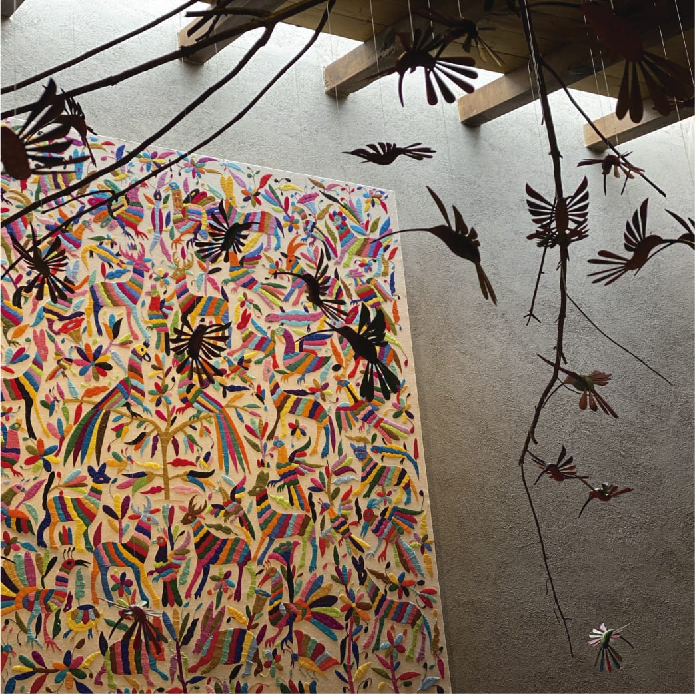
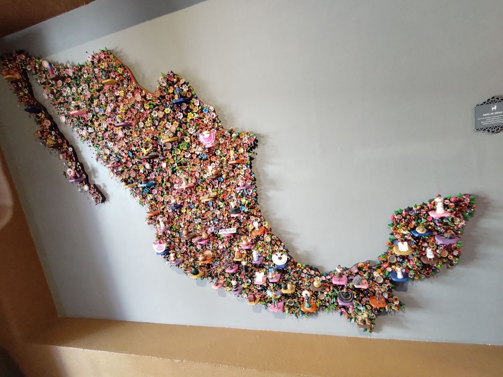
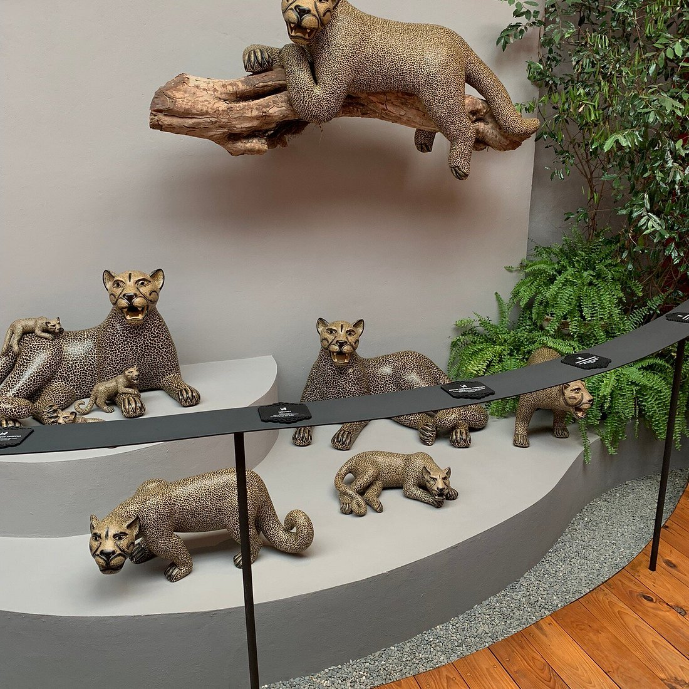

El museo es un espacio dedicado a conservar y compartir la historia, las costumbres y las expresiones culturales de Valle de Bravo. A través de sus instalaciones, los visitantes pueden conocer diferentes aspectos de la identidad del municipio y descubrir elementos que forman parte de su patrimonio histórico.
Sus espacios permiten realizar recorridos culturales en los que se aprecia la importancia de preservar los conocimientos y las tradiciones de generaciones anteriores. También representa una oportunidad para estudiantes, familias y turistas interesados en conocer más sobre el desarrollo y la riqueza cultural de la región.

Dentro del museo se pueden encontrar diferentes espacios destinados a presentar objetos, fotografías, documentos y piezas relacionadas con la historia y la cultura. Estas exhibiciones permiten conocer acontecimientos, actividades y manifestaciones artísticas que forman parte de la identidad de Valle de Bravo.
Cada exposición ofrece una oportunidad para observar detalles del pasado y comprender cómo han evolucionado las costumbres y formas de vida de la comunidad. Además, los recorridos permiten apreciar el valor histórico de los objetos exhibidos y reconocer la importancia de protegerlos para las futuras generaciones.

Los espacios culturales del museo permiten acercarse a distintas expresiones artísticas e históricas que representan la identidad de Valle de Bravo. Mediante sus exposiciones y elementos visuales, los visitantes pueden descubrir aspectos importantes de la creatividad, las tradiciones y el patrimonio de la localidad.
Visitar este lugar es una experiencia enriquecedora para quienes desean conocer más sobre la historia del municipio y su evolución cultural. También fomenta el interés por el arte, la educación y la conservación del patrimonio. Es un espacio que complementa la experiencia turística y permite valorar la riqueza cultural que distingue a Valle de Bravo.
¡Conoce, disfruta y comparte nuestras maravillas!
VER VIDEO EN TIKTOK